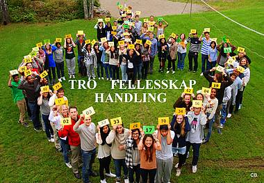

Om NUK
NUK Norges Unge Katolikker - en katolsk barne- og ungdomsorganisasjon
Norges Unge Katolikker (NUK) er en landsdekkende sammenslutning av katolske barne- og ungdomslag som har sitt utspring i de katolske menighetene i Norge. NUK er et fellesskap hvor barn og unge har sin egen plass og kan treffe andre katolikker. NUK som organisasjon baserer sitt arbeid på troskap til Kirken og arbeider i samråd med biskopene på stiftsplan, og sogneprestene i de enkelte menighetene. NUK støttes av biskopene i de tre katolske stiftene i Norge.
Til grunn for alt NUKs arbeid ligger de tre nøkkelbegrepene Tro, Fellesskap og Handling, slik det er beskrevet i organisasjonens formålsparagraf.
Organisering og arrangementer
NUK har tre plan: Lokalt, regionalt (distriktene) og sentralt/nasjonalt.
Organisasjonen har lokallag rundt om i hele landet. Her treffes barn og ungdommer for å bygge opp vennskap og fellesskap med hverandre i troen, og for å gjøre ting for andre mennesker. Det lokale arbeidet er det primære i NUKs virksomhet. NUKs øverste organ er det årlige landsmøtet, hvor delegatene fra lokallagene er i flertall.
Distriktene er sammenslutninger av lokallagene innenfor et geografisk område. Organisasjonen har syv distrikter: Nord, Midt, Vest, Sør, Øst, Oslo og Østfold.
NUKs sentralledd er: Arbeidsutvalget, inkludert leder, og Landsstyret, utvalgene og redaksjonene. NUK har et sentralt sekretariat og ungdomsprest. Både leder og resten av Arbeidsutvalget velges av Landsmøtet.
Hvert år arrangeres det også barne- og ungdomsleirer i regi av NUK. Disse leirene er spredt rundt i hele landet. Det arrangeres påskeleirer for ungdom og sommerleirer for alle aldersgrupper. NUK arrangerer også flere helgesamlinger hvert år.
Norges Unge Katolikker - den katolske barne- og ungdomsorganisasjon
Norges Unge Katolikker (NUK) er en landsdekkende sammenslutning av katolske barne- og ungdomslag som har sitt utspring i de katolske menighetene i Norge. NUK er et fellesskap hvor barn og unge har sin egen plass og kan treffe andre katolikker. NUK som organisasjon baserer sitt arbeid på troskap til Kirken og arbeider i samråd med biskopene på stiftsplan, og sogneprestene i de enkelte menighetene. NUK støttes av biskopene i de tre katolske stiftene i Norge.